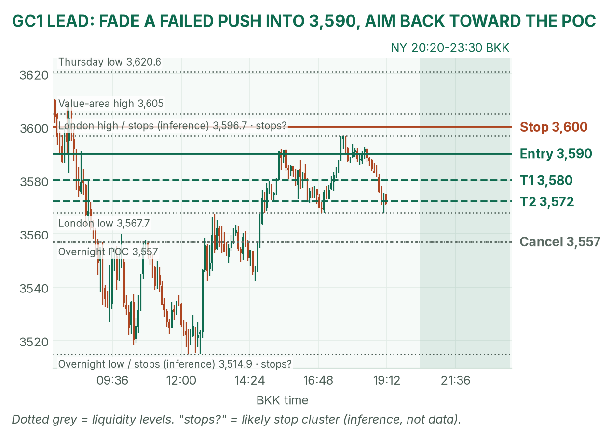
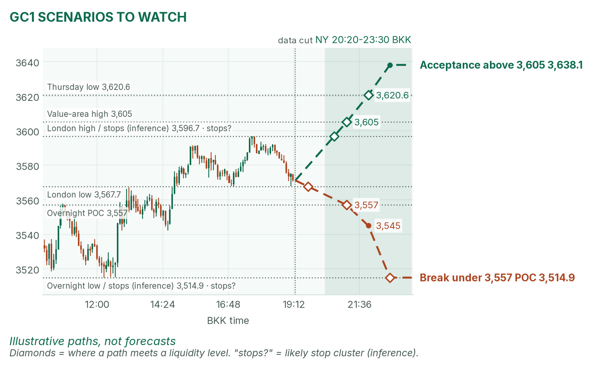
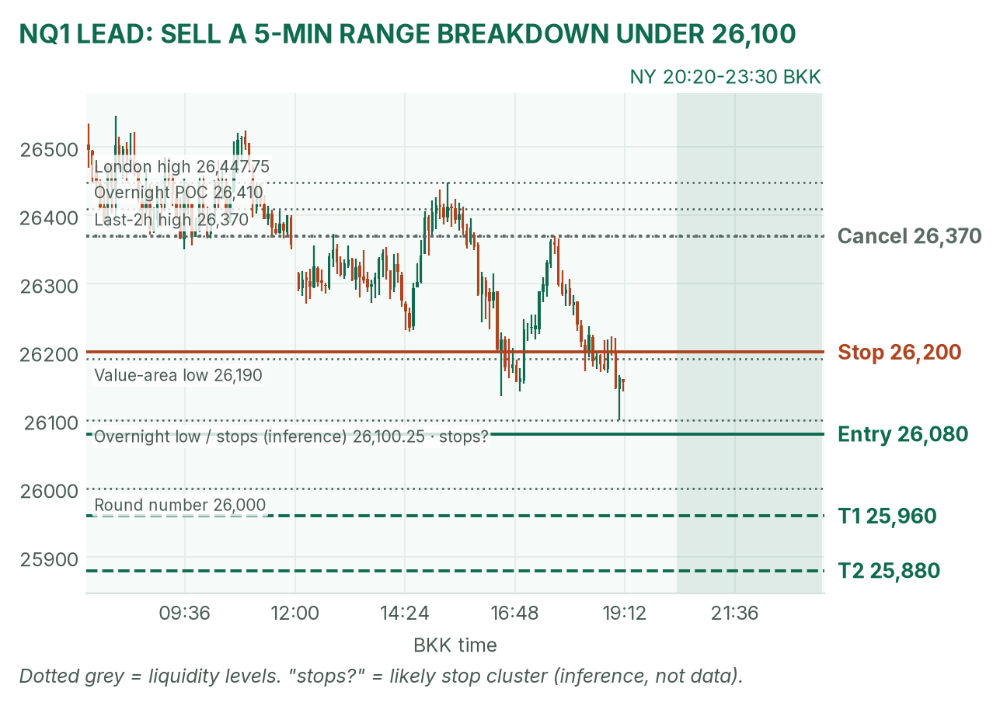
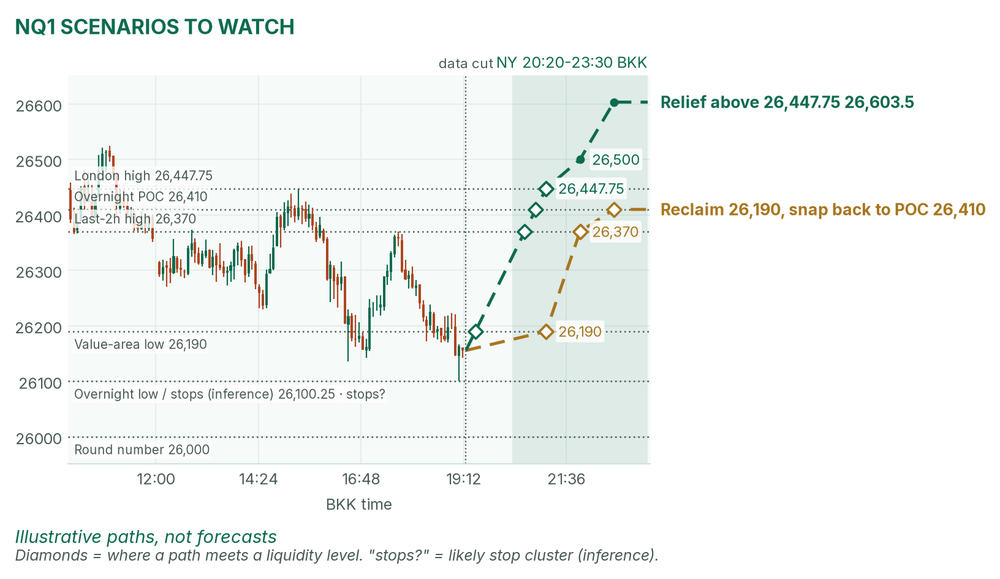

The AI sell-off rolls on. Fade gold's pop, sell Nasdaq only on a clean break lower.
Window 20:20–23:30 BKK (US winter time). Data cut 19:15 BKK: GC 3,571.2, NQ 26,155.75 (Dec contracts, last completed 5-minute bar). Data source: Yahoo Finance backup, because the TopstepX feed stopped updating after 15:04 BKK; levels match TopstepX up to then. Levels only, flat by 23:30. Ideas, not advice. April's pre-NY brief (~18:55 BKK) was read.
Summary
GC: sell a failed push into 3,590, stop 3,600, targets 3,580 and 3,572. About 34%.
NQ: sell a 5-minute-range break under 26,100, entry 26,080, stop 26,200, targets 25,960 and 25,880. About 33%; only after 21:35.
No-trade zones: 20:20–20:32 (Fed's Waller 20:25, Canada retail sales 20:30), 21:55–22:02 (Michigan sentiment). The 21:30 stock open can jump prices.
The market story
A global AI unwind: Taiwan fell 6.2% and Anthropic is −6.9% premarket in its second day (April). Nasdaq made a new low at 26,100.25 at 19:05 BKK, below Thursday's 26,436 low. That is a gap down (today trades entirely under yesterday's range).
Gold fell to 3,514.9, its lowest since September 2025, on forced selling to cover tech losses, then bounced to about 3,572. The 10-year yield dropped 6.8 basis points to 4.984%. Your rates lesson: lower yields cut gold's opportunity cost (the interest you give up holding it), which helps the bounce. My bias: Nasdaq down; gold rangebound under 3,605.
News (BKK)
Time
Event
Forecast
Prior
Read
20:25
Fed's Waller speaks
–
–
The Fed decider. A pause hint lifts gold; hike talk presses it.
20:30
Canada retail sales (Sep)
+1.2%
–
Minor.
21:30
US stocks open; Anthropic day two
–
–
The tech decider.
22:00
Michigan sentiment (final) and inflation expectations
51.0
1-yr exp. 4.3%
Hot (higher expectations): yields up, gold and tech lower. Cold: relief.
Sat 00:00–00:15
Trump; Fed's Cook and Barr
–
–
After the window.
No whisper number found; past move sizes not measured this run. Source: April's brief (XTB, Benzinga).
Levels to watch
Level
GC
NQ
Thursday settle (April)
3,685.5
26,600.25
Thursday high / low
3,759.5 / 3,620.6
27,838.00 / 26,436.00
Overnight high / low (since 06:00)
3,638.1 / 3,514.9
26,603.50 / 26,100.25
London high / low (since 15:00)
3,596.7 / 3,567.7
26,447.75 / 26,100.25
Overnight POC
3,557
26,410
Overnight value area
3,520–3,605
26,190–26,500
Expected NY range (4-session median)
about 53 points
about 589 points
Gold (GC1)
Bias: neutral to down inside a big range. Gold sits between its 3,557 POC (the busiest overnight price) and the 3,605 value-area high. The NY rule fades the 20:20 COMEX opening range back toward the POC, so I sell a pop that fails at the London high.
The trade: fade the failed push
Entry
Sell 3,588–3,592 (plan 3,590), after 20:32, only if a push stalls under the 3,596.7 London high
Stop
3,600, above the London high and its stops (inference)
Targets
1R partial 3,580 · T2 3,572 (1.8R), above the 3,567.7 London low
Cancel
A trade at 3,557 before the fill, or no fill by 22:30
Probability
~34%, an estimate. Basis: GC NY opening ranges mostly failed and reverted in my 42-session study (not significant); T2 is a third of the expected range.
A dovish Waller that pushes gold over 3,605 kills the idea. April partly agrees: she sees the range holding, but a softer Waller could send gold to 3,638.1.

GC 5-minute bars into 19:15. The bounce from 3,514.9 stalled under 3,597.

Illustrative paths, not forecasts.
Scenarios to watch
Bullish: a 5m close above 3,605 that holds. Aims for 3,620.6, then 3,638.1.
Bearish: a 5m close below the 3,557 POC. Aims for 3,545, then 3,514.9 (stops, inference).
Nasdaq (NQ1)
Bias: down. NQ trades below its 26,190–26,500 value area (where 70% of volume traded) and at the overnight low. The NY rule: trade breakouts of the 21:30–21:35 range. After about 22:00, stay short only below VWAP (the volume-weighted average price).
The trade: bearish range breakdown
Entry
Sell stop 26,080, after 21:35, only if the 21:30–21:35 range low is at or above 26,100.25
A trade above 26,370 before the fill, or no fill by 22:45
Probability
~33%, an estimate. Basis: NQ 5-minute breakouts did best in my study (+0.37R, 31 trades, not significant); T2 is a third of the expected range.
Shorting at a fresh low invites a squeeze; skip a break that snaps back over 26,100. April partly agrees: she flags breaks of the lows, but calls a steady range the base case.

NQ 5-minute bars into 19:15. Lower highs all day, ending at a new low.

Illustrative paths, not forecasts.
Scenarios to watch
Mean reversion: a 5m close back above 26,190. Aims for 26,370, then the 26,410 POC.
Bullish relief: a close above the 26,447.75 London high. Aims for 26,603.5.
6E: 1.0971, near its 1.0967 low. Context only.
Before you click
ORB bases. GC NY: 20:20 COMEX open until a 2-minute candle's volume drops below half the first two's average, fade to POC. NQ NY: 21:30–21:35 range, trade breakouts. GC and 6E London: 15:00–15:30 range (fade gold, break the euro).
Checklist. 1) Room to today's max loss? 2) Within daily rules? 3) No release within 30 minutes? 4) Agrees with the bias? 5) At a marked level? 6) Setup tagged? 7) Entry, stop, 1R partial, target set? 8) Calm, not chasing?
Reset (60 seconds). Hands off the mouse. Breathe in 4, hold 4, out 6, five times. Name the feeling in one word. "Eager" or "frustrated"? Wait 5 minutes.
Yahoo Finance Dec futures 5-minute bars (backup; the TopstepX feed stopped updating after 15:04 BKK). Overnight starts 06:00 BKK. Settles, yields, dollar, Fed odds, calendar: April's brief.